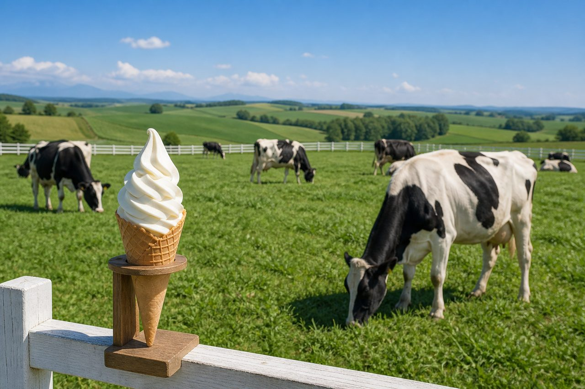
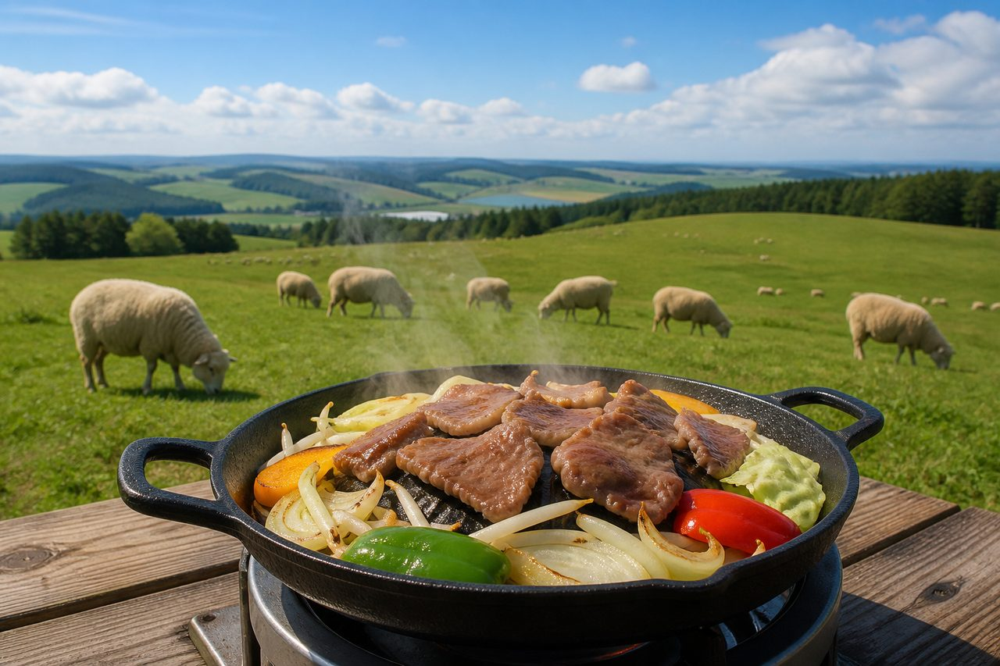
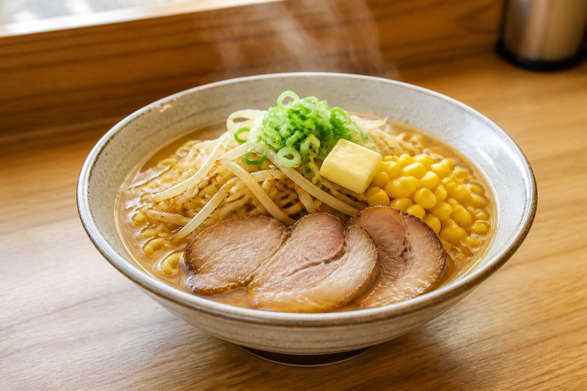
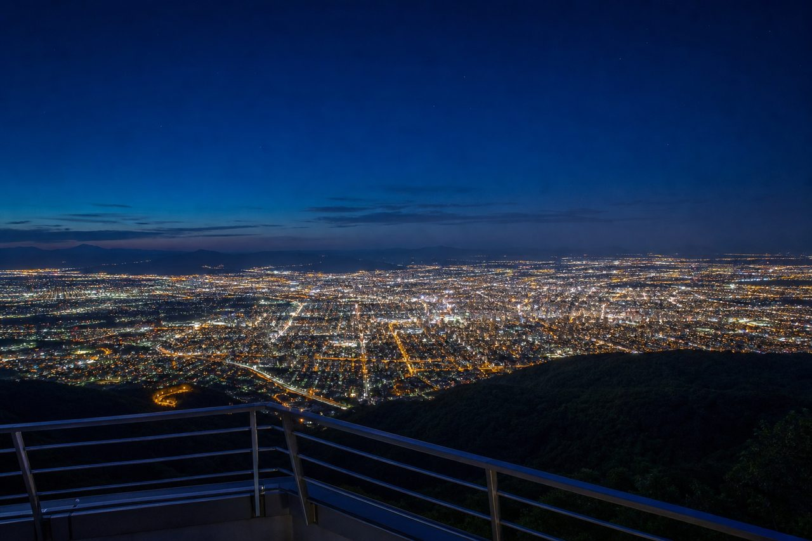
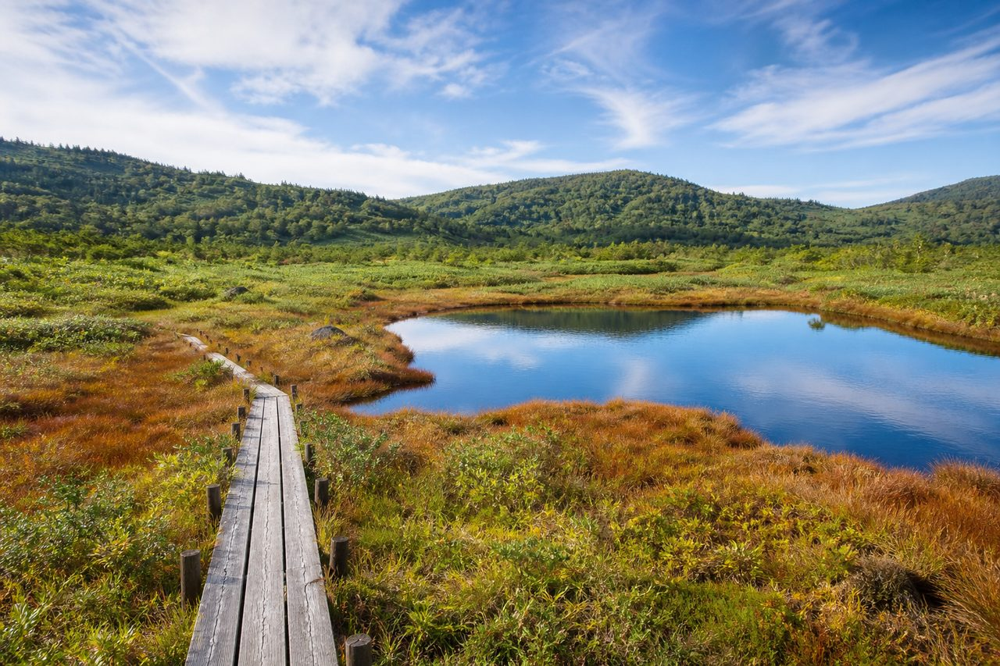
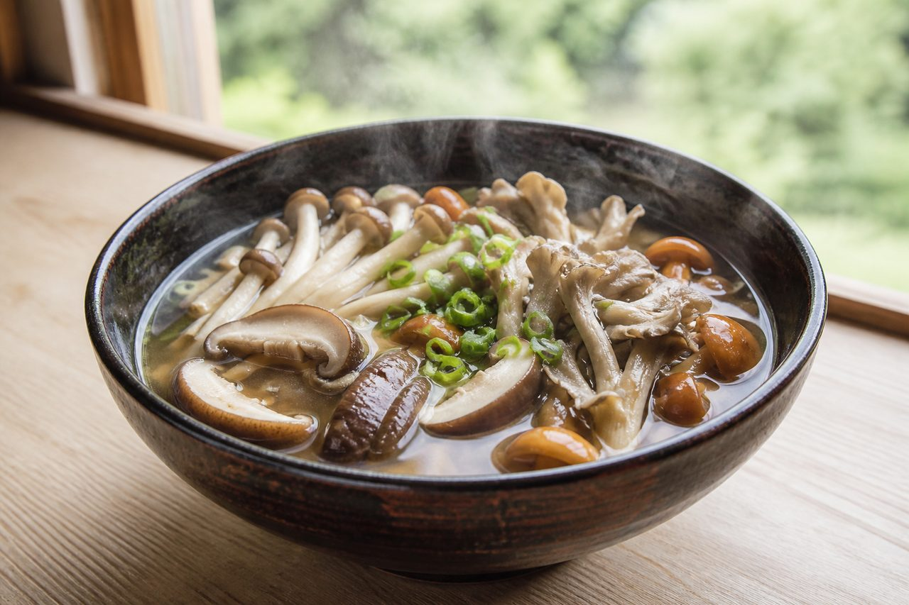
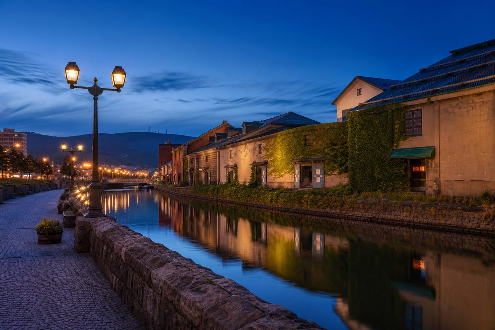

DAY 1 — 8/30(日)
新千歳 → 富良野へ
泊:富良野
13:35
新千歳空港 着(NH63)
レンタカー受け取り(送迎バス込みで〜30分見ておく)
14:30
🚗 道東道・占冠IC経由で富良野へ(約3時間)。途中、道の駅で休憩
17:30
富良野 着・ホテルチェックイン宿は新富良野プリンス周辺が翌朝も動きやすい
18:30
夕食(富良野市街 or ホテル)
富良野オムカレーなどご当地グルメも
19:45
ニングルテラス 夜の散策
地図〜20:45(8月営業時間)。日没後のライトアップが幻想的
DAY 2 — 8/31(月)
美瑛観光 → 夜は札幌
泊:札幌
9:00
青い池 地図午前が空いていて水面もきれい。駐車場 普通車¥1,000。近くの白ひげの滝もセットで
10:30
美瑛放牧酪農場 地図10:00〜17:00・入場無料。ソフトクリーム(カップ¥400/コーン¥500)
12:15
ひつじの丘 本店 ジンギスカンランチ
地図11:00〜15:00(LO14:30)・予約不可。混んでいたら先に周辺を回って14時前に
13:45
パッチワークの路・丘めぐりドライブ(時間があれば)
セブンスターの木、ケンとメリーの木など
14:30
🚗 札幌へ(三笠IC経由・約2時間40分)
19:00
夕食:ラーメン(すみれ本店/雪風/輝風 など)
地図※彩未は月曜定休。奈央さんリストの雪風・輝風はすすきのエリア。友達との食事をこの夜にするのも◎
20:30
藻岩山 山頂展望台で夜景(元気があれば)
地図奈央さんリストより。ロープウェイ上り最終21:30(〜9月は要確認)。DAY 3の夜でもOK
DAY 3 — 9/1(火)
ニセコ → 神威岬 → 小樽 ぐるっと一周
泊:札幌
8:00
札幌出発(国道230号・中山峠ルート)
この日は走行距離が長いので早めスタートが吉
9:30
きのこ王国 喜茂別店で休憩
地図名物きのこ汁 約¥100。ルート上なので立ち寄りやすい
10:30
ニセコ HANAZONOリゾート 地図奈央さんメモ「ゴンドラで空のピクニック・ジップライン・ハンモック」⚠ ただしゴンドラは9月平日休止の可能性大。要事前確認&予約(休止なら神仙沼&Olivioランチに切替)
11:45
神仙沼(ニセコパノラマライン)
地図駐車場から木道で片道約20分。散策込み約1時間・無料
13:00
🚗 岩内経由で積丹へ(約1時間半)。岩内か積丹で海鮮ランチ
14:45
神威岬 地図先端まで往復約40分。入園は16:30まで・強風時ゲート閉鎖あり(当日に積丹観光協会サイトで確認)
16:15
🚗 国道229号の海岸線を小樽へ(約1時間半)。途中のきのこ王国 仁木店(奈央さんリスト)で休憩も
17:45
小樽祝津パノラマ展望台で夕日
地図無料・24時間。9/1の小樽の日没は18:10頃
18:45
小樽運河 夜散歩 & 夕食ガス灯の夜景。ルタオ運河プラザ店で「オタルタ」(奈央さんリクエスト・営業時間要確認)、堺町通り・オルゴール堂は閉店が早め(〜18時頃)なので回れたら夕方のうちに。夕食は小樽の寿司・海鮮 or 札幌に戻って友達と
DAY 4 — 9/2(水)
札幌グルメ → 帰路
20:30 CTS発
9:30
チェックアウト → 円山エリアへ時間があれば北海道神宮・円山公園を散歩
11:00
回転寿し トリトン 円山店(開店直後が狙い目)
地図予約不可。公式LINEで待ち状況を確認できる
12:30
円山牛乳販売店でクレープ&ソフト
地図11:00〜18:00・火曜定休なので水曜の今日に。トリトンから徒歩圏
13:30
札幌市内観光大通公園・時計台・二条市場・白い恋人パークなどお好みで。友達とお茶もこの枠で
17:00
🚗 新千歳空港へ(約1時間)。途中で給油
18:15
レンタカー返却 → 空港へお土産&夕食は奈央さんリストの美瑛選果・十勝VALLEYs・どんぶり茶屋(いずれも新千歳空港内)で
ルートの考え方:彼女さんの行きたい候補は「美瑛・富良野」と「ニセコ・積丹・小樽」で方角が逆のため、友人案の登別・洞爺湖/トマム泊は今回見送り。メモの原案(1日目美瑛→2日目札幌→3日目ニセコ・小樽)をそのまま実現できる形にしました。DAY 3の走行が長め(約330km)なので、きつければHANAZONOか神威岬のどちらかを省くとゆとりが出ます。
選び方:3泊4日で「美瑛・富良野」と「ニセコ・積丹」の両方に行くなら運転量は覚悟(A案)。どちらかを諦めるとゆとりが生まれます(B・C案)。友人案ベースの温泉・リゾート重視はD・E案。決まったら「旅程」タブをそのプランに合わせて更新するので教えてください。
A案:王道ぜんぶ一周おすすめ
泊:富良野 → 札幌 → 札幌(現在の「旅程」タブ)
D2
青い池 → 酪農場 → ひつじの丘 → 札幌(夜ラーメン+藻岩山夜景)
D3
ニセコ(HANAZONO・神仙沼)→ 神威岬 → 小樽(夕日・運河・オタルタ)
D4
円山(トリトン・クレープ)→ 札幌観光 → 空港
彼女メモ全網羅奈央リスト主要どころ◎総走行 約700km・D3が長いHANAZONOゴンドラ9/1休止の可能性
B案:ニセコどっぷり西側集中
泊:ニセコ → 小樽 → 札幌
D1
新千歳 → 中山峠(きのこ王国)→ ニセコ泊(Chalet Ivy Weiss候補・夕食ISO)
D2
HANAZONO午前(8/31なら月曜・営業要確認)→ 神仙沼 → 神威岬 → 小樽泊(祝津の夕日)
D3
青の洞窟クルーズ → 堺町通り・ルタオ・オルゴール堂 → 札幌(夜すすきのラーメン・藻岩山)
運転が毎日ほどよく分散小樽をじっくり(クルーズも入る)ニセコの良い宿に泊まれる美瑛・富良野をすべて諦める(青い池・ひつじの丘・ニングルテラス✗)
C案:美瑛じっくり+積丹・小樽(ニセコなし)
泊:富良野・美瑛(ぽらりす?)→ 札幌 → 札幌
D2
青い池 → ジェットコースターの路 → ひつじの丘 or だぐらすふぁ〜む → 酪農場 → 札幌
D3
余市経由 → 神威岬 → 青の洞窟クルーズ or 祝津 → 小樽街歩き → 札幌
D4
円山(トリトン・クレープ)→ 札幌観光 → 空港
美瑛の丘を余裕をもって回れるD3が約260kmに収まりクルーズも可ニセコ(HANAZONO・神仙沼・ISO)✗
D案:温泉のんびり(友人案①ベース)
泊:登別温泉 → 札幌 → 札幌
D1
新千歳 → 登別(約1時間)。地獄谷散策 → 温泉宿でゆっくり
D2
洞爺湖 → 相川ビューポイント(羊蹄山)→ 神仙沼 → 中山峠(きのこ王国)→ 札幌
D3
神威岬 or 青の洞窟 → 小樽(堺町通り・ルタオ・夕日)→ 札幌
初日から温泉で疲れが取れる運転がいちばん楽洞爺湖・登別(奈央リスト)に行ける美瑛・富良野✗、HANAZONO✗
E案:トマム星野リゾート+美瑛(友人案②ベース)
泊:トマム ザ・タワー → 札幌 → 札幌
D1
新千歳 → トマム(約1時間半)。リゾート内でアクティビティ&ディナー
D2
早朝:雲海テラス(運次第!)→ 美瑛(青い池・酪農場)→ ひつじの丘(14:30 LOに注意)→ 札幌
宿の特別感No.1(奈央リストのトマム)雲海テラスのチャンスニングルテラスの夜は不可D2の予定が詰まる・宿代高め
ざっくり比較
| 案 | 泊 | 彼女メモ網羅 | 運転量 | 宿の特別感 |
|---|
| A 王道一周 | 富良野/札幌×2 | ◎ 全部 | △ 多い | ○ |
| B 西側集中 | ニセコ/小樽/札幌 | ○ 美瑛以外 | ◎ 分散 | ◎ |
| C 美瑛+積丹 | 富良野/札幌×2 | ○ ニセコ以外 | ○ ほどよい | ○ |
| D 温泉 | 登別/札幌×2 | △ 西側のみ | ◎ 楽 | ◎ 温泉 |
| E トマム | トマム/札幌×2 | ○ ニセコ次第 | △ 多め | ◎ 星野 |
2人で決めること
予約・営業の確認(旅行前)
当日に確認
北海道 全体マップ
1〜12旅程のスポット(タップで地図と連動)
13〜44奈央さんのリスト「北海道」
メモ:ぽらりす(宿)・だぐらすふぁ〜む・まぐろセカンド・Chalet Ivy Weissのピン位置はおおよそです(正確な住所は要確認)。洞爺湖・登別・トマム・旭岳・知床は今回のルート外ですが、位置がわかるようピンにしています。
イメージギャラリー
青い池
ニングルテラス

美瑛放牧酪農場

ひつじの丘ジンギスカン

札幌味噌ラーメン

藻岩山の夜景

神仙沼
神威岬

きのこ汁

小樽運河
回転寿司
クレープ&ソフト
※画像はAI生成のイメージです。実際の店舗・景観とは異なります
美瑛・富良野
ニセコ・積丹
小樽
札幌グルメ
要注意ポイント
定休日トラップ:麺屋 彩未は月曜定休(8/31 ✗)、円山牛乳販売店は火曜定休(9/1 ✗)。ラーメンは8/31夜=すみれ、クレープは9/2に。
HANAZONOのゴンドラ・主要アクティビティ:2026年は7/4〜8/30毎日+9月は土日祝のみの営業予定。9/1(火)は休止の可能性が高いので、体験したいものがあれば公式サイトで確認・予約を。
神威岬:入園は16:30まで。天候(強風)でゲートが閉まる日があるので、当日朝に開放状況を確認してからルートを確定。
ひつじの丘・トリトン:どちらも予約不可の人気店。ひつじの丘は開店(11:00)直後、トリトンも開店直後入店が確実。
移動時間の目安(車)
| 区間 | 時間 |
|---|
| 新千歳空港 → 富良野・美瑛 | 約3時間 |
| 美瑛 → 札幌(三笠IC経由) | 約2時間40分 |
| 札幌 → ニセコ(中山峠) | 約2時間 |
| ニセコ → 神威岬 | 約1時間半〜2時間 |
| 神威岬 → 小樽 | 約1時間半 |
| 小樽 → 札幌(札樽道) | 約45分 |
| 札幌 → 新千歳空港 | 約1時間 |
みんなの希望メモ(元ネタ)
彼女のメモ:美瑛放牧酪農場・ひつじの丘・青い池・ニングルテラス/ニセコHANAZONO・神仙沼/小樽祝津パノラマ展望台/神威岬・きのこ王国 → 全部旅程に反映済み
LINEの追加:トリトン・札幌ラーメン・円山牛乳販売店のクレープ・友達とごはん → DAY 2夜/DAY 4に反映済み
友人アドバイス:登別温泉案/トマム星野リゾート案 → 行きたい候補と方角が合わないため今回は見送り(次回の候補に)
奈央さんのGoogle Mapsリスト「北海道」:全44か所をマップタブにピン表示。ルートに合うもの(藻岩山夜景・ルタオのオタルタ・きのこ王国仁木店・空港グルメなど)は旅程にも反映済み。洞爺湖・登別・トマム・旭岳・知床は今回ルート外
情報の鮮度について:営業時間・料金は2026年8月時点の調査に基づく目安です。特にHANAZONOの営業日・ニングルテラスの9月営業時間・神威岬のゲート状況は、直前に公式サイトでの確認をおすすめします。チェックの状態はこの端末のブラウザに保存されます(2人で使う場合はそれぞれの端末で別々に保存されます)。